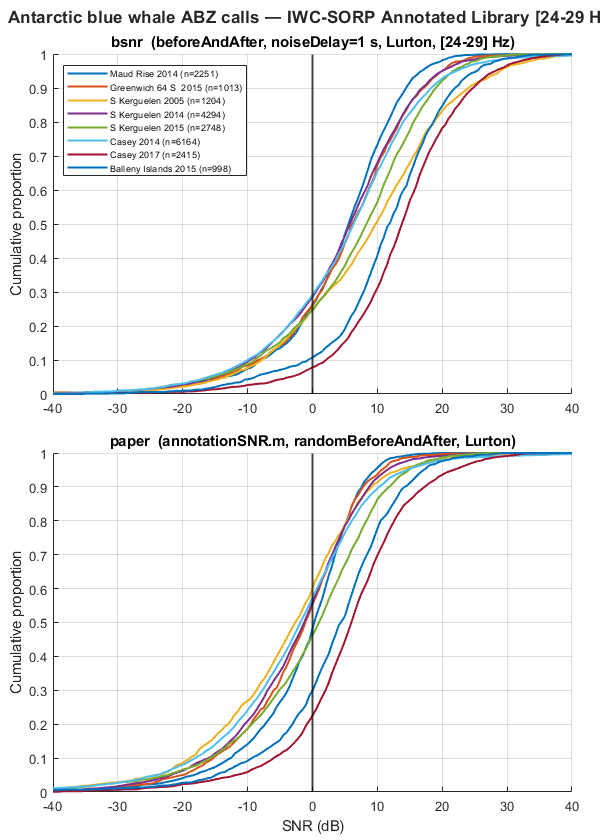
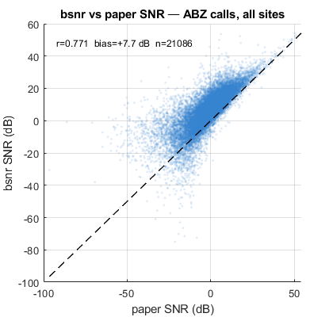

SNR of Antarctic blue whale calls — IWC-SORP Annotated Library
Estimates SNR for ABW A, B, and Z calls (pooled as ABZ) across 8 sites from the IWC-SORP Annotated Library (Miller et al. 2021). CDF distributions per site replicate Figure 8 of the paper.
The original analysis used random noise window placement (randomBeforeAndAfter), which is not reproducible. This script uses fixed placement (beforeAndAfter, noiseDelay=1 s) and fixed frequency band [24-29 Hz], giving r = 0.55-0.82 vs the paper's SNR values across sites. Three sites are excluded: Elephant Island 2013 (annotations not comparable), Elephant Island 2014 (anomalously long annotation durations), and Ross Sea 2014 (duplicate entry).
REFERENCE Miller, B.S. et al. (2021). An Open Access Dataset for Developing Automated Detectors of Antarctic Baleen Whale Sounds. Scientific Reports 11, 806. https://doi.org/10.1038/s41598-020-78995-8
DATA Annotations and recordings: Australian Antarctic Data Centre https://data.aad.gov.au/metadata/AcousticTrends_BlueFinLibrary https://doi.org/10.26179/5e6056035c01b folderStructure.csv: part of annotated library download package *_BmAntABZ_snr.csv: paper SNR values (not publicly available; set paperSNRFolder = '' to skip comparison)
Contents
User configuration
Edit the paths below to match your local installation. Annotations are part of the IWC-SORP Annotated Library public download (doi:10.26179/5e6056035c01b). Recordings are available from the same DOI. Paper SNR files (*_BmAntABZ_snr.csv) are from the original project folder and are not publicly available; set paperSNRFolder = '' to skip comparison.
% Root folder containing site subfolders with WAV files soundLibraryRoot = 'S:\work\annotatedLibrary\SORP\'; % Root folder containing Raven selection tables % (same structure as soundLibraryRoot for this dataset) annotationRoot = 'S:\work\annotatedLibrary\SORP\'; % folderStructure.csv — site metadata, part of annotated library download folderStructureFile = fullfile(annotationRoot, '01-Documentation', ... 'folderStructure.csv'); % Paper SNR files — from original project folder, not public download. % Set to '' to skip paper comparison. paperSNRFolder = 'S:\manuscripts\2017-annotatedLibrary\'; % STFT parameters % nfft is derived per site to give approximately nSlicesTarget slices per % annotation at the site's sample rate. overlapFraction = 0.85 following % the original annotationSNR.m display defaults. nSlicesTarget = 30; overlapFraction = 0.85; % Noise window — fixed placement to ensure reproducibility % (original used randomBeforeAndAfter with noiseDelay=1 s) noiseLocationStrategy = 'beforeAndAfter'; noiseDelaySeconds = 1.0; % Frequency band — fixed unit-A band used throughout Miller et al. (2021) signalFrequencyBand = [24 29]; % Hz % Call types to process — pooled as ABZ in output following paper convention callTypeNames = {'BmAntA', 'BmAntB', 'BmAntZ'}; callTypeColumns = {'Abw_A_RavenFile', 'Abw_B_RavenFile', 'Abw_Z_RavenFile'}; pooledCallLabel = 'ABZ'; % Output verbosity showBsnrProgress = false;
Suppress expected warnings
warning('off', 'snrEstimate:nfftAutoSelected'); warning('off', 'snrEstimate:nfftTruncation'); warning('off', 'snrEstimate:nfftHighTruncation'); warning('off', 'MATLAB:table:ModifiedAndSavedVarnames');
Load and filter site metadata
fprintf('Loading site metadata...\n'); siteMetadata = readtable(folderStructureFile); excludedSites = { 'Elephant Island 2013', 'annotations not comparable to other sites' 'Elephant Island 2014', 'annotation durations anomalously long' 'Ross sea 2014', 'duplicate entry with inconsistent naming' }; for e = 1:size(excludedSites, 1) isSite = strcmp(siteMetadata.SiteCode, excludedSites{e,1}); if any(isSite) fprintf(' Excluding %s: %s\n', excludedSites{e,1}, excludedSites{e,2}); siteMetadata = siteMetadata(~isSite, :); end end nSites = height(siteMetadata); fprintf(' %d sites retained\n', nSites);
Loading site metadata... Excluding Elephant Island 2013: annotations not comparable to other sites Excluding Elephant Island 2014: annotation durations anomalously long Excluding Ross sea 2014: duplicate entry with inconsistent naming 8 sites retained
Compute SNR for each site and call type
allResults = table(); for s = 1:nSites siteCode = siteMetadata.SiteCode{s}; siteSoundFolder = fullfile(soundLibraryRoot, siteMetadata.Folder{s}); siteSampleRate = siteMetadata.SampleRate(s); % nfft scaled to site sample rate for ~nSlicesTarget slices per annotation medianCallDuration = 8; % s — conservative median across A/B/Z call types nfft = 2^nextpow2(floor(medianCallDuration / nSlicesTarget ... / (1 - overlapFraction) * siteSampleRate)); nOverlap = floor(nfft * overlapFraction); fprintf('\n%s (SR=%d Hz, nfft=%d, nOverlap=%d)\n', ... siteCode, siteSampleRate, nfft, nOverlap); % Load paper SNR file for this site if available paperSNRTable = loadPaperSNR(siteMetadata.Folder{s}, paperSNRFolder); hasPaperSNR = ~isempty(paperSNRTable); for c = 1:numel(callTypeNames) callType = callTypeNames{c}; ravenFile = siteMetadata.(callTypeColumns{c}){s}; if isempty(ravenFile), continue; end ravenFilePath = fullfile(annotationRoot, siteMetadata.Folder{s}, ravenFile); if ~exist(ravenFilePath, 'file') fprintf(' %s: Raven file not found, skipping\n', callType); continue; end % Load annotations from Raven selection table detections = ravenTableToDetection(ravenFilePath, siteSoundFolder, ... siteCode, callType); if isempty(detections) || height(detections) == 0, continue; end nDetections = height(detections); fprintf(' %s: n=%d dur=%.1f s freq=[%.0f-%.0f] Hz\n', ... callType, nDetections, median(detections.duration), ... median(detections.fLow), median(detections.fHigh)); % SNR parameters — Lurton formula to match paper snrParams = struct( ... 'snrType', 'spectrogram', ... 'nfft', nfft, ... 'nOverlap', nOverlap, ... 'noiseLocation', noiseLocationStrategy, ... 'noiseDelay', noiseDelaySeconds, ... 'freq', signalFrequencyBand, ... 'useLurton', true, ... 'showClips', false, ... 'verbose', showBsnrProgress); snrResults = snrEstimate(detections, snrParams); snrBsnr = snrResults.snr; % Match to paper SNR values by detection start time snrPaper = matchPaperSNR(detections.t0, callType, paperSNRTable, hasPaperSNR); % Correlation with paper SNR values validBsnr = isfinite(snrBsnr); validPaper = isfinite(snrPaper); validBoth = validBsnr & validPaper; r = NaN; if sum(validBoth) > 5 r = corr(snrBsnr(validBoth), snrPaper(validBoth)); end % Accumulate into results table newRows = table( ... repmat({siteCode}, nDetections, 1), ... repmat({pooledCallLabel}, nDetections, 1), ... detections.t0, detections.duration, ... detections.fLow, detections.fHigh, ... snrBsnr, snrPaper, ... 'VariableNames', {'site', 'callType', 't0', 'duration_s', ... 'fLow_Hz', 'fHigh_Hz', 'snr_bsnr', 'snr_paper'}); allResults = [allResults; newRows]; %#ok<AGROW> end end
Maud Rise 2014 (SR=2048 Hz, nfft=4096, nOverlap=3481)
Summary table
siteList = unique(allResults.site, 'stable'); fprintf('\n\n%-28s %6s %6s %6s %6s %5s\n', ... 'Site', 'n', 'mean', 'median', 'paper', 'r'); fprintf('%s\n', repmat('-', 1, 62)); for s = 1:numel(siteList) siteMask = strcmp(allResults.site, siteList{s}); siteSnrBsnr = allResults.snr_bsnr(siteMask); siteSnrPaper = allResults.snr_paper(siteMask); validBsnr = isfinite(siteSnrBsnr); validPaper = isfinite(siteSnrPaper); validBoth = validBsnr & validPaper; r = NaN; if sum(validBoth) > 5 r = corr(siteSnrBsnr(validBoth), siteSnrPaper(validBoth)); end fprintf('%-28s %6d %6.1f %6.1f %6.1f %5.3f\n', ... siteList{s}, sum(validBsnr), ... mean(siteSnrBsnr(validBsnr)), median(siteSnrBsnr(validBsnr)), ... median(siteSnrPaper(validPaper)), r); end
Site n mean median paper r -------------------------------------------------------------- Maud Rise 2014 2251 4.2 5.6 0.3 0.759 Greenwich 64 S 2015 1013 5.0 6.1 -1.1 0.756 S Kerguelen 2005 1204 8.5 9.8 -2.6 0.608 S Kerguelen 2014 4294 4.6 5.8 -1.3 0.778 S Kerguelen 2015 2748 6.3 8.3 1.0 0.798 Casey 2014 6164 5.1 6.3 -1.8 0.756 Casey 2017 2415 13.2 13.8 6.0 0.824 Balleny Islands 2015 998 11.0 11.8 4.4 0.817
Figure 1: CDF per site — replicates Miller et al. (2021) Figure 8
siteColours = lines(numel(siteList)); xSNR = -40 : 0.5 : 40; hasPaperCDF = any(isfinite(allResults.snr_paper)); nPanels = 1 + hasPaperCDF; fig1 = figure('Name', 'ABW ABZ SNR — CDF per site', ... 'Units', 'pixels', 'Position', [50 50 600 420 * nPanels]); tlo1 = tiledlayout(fig1, nPanels, 1, 'TileSpacing', 'compact', 'Padding', 'compact'); title(tlo1, 'Antarctic blue whale ABZ calls — IWC-SORP Annotated Library [24-29 Hz]', ... 'FontWeight', 'bold'); % Top panel: bsnr CDFs nexttile(tlo1); hold on; for s = 1:numel(siteList) siteMask = strcmp(allResults.site, siteList{s}); snrBsnr = allResults.snr_bsnr(siteMask); valid = isfinite(snrBsnr); if sum(valid) < 10, continue; end cdfValues = arrayfun(@(x) mean(snrBsnr(valid) <= x), xSNR); plot(xSNR, cdfValues, 'Color', siteColours(s,:), 'LineWidth', 1.5, ... 'DisplayName', sprintf('%s (n=%d)', siteList{s}, sum(valid))); end hold off; xline(0, 'k-', 'LineWidth', 1.5, 'HandleVisibility', 'off'); ylabel('Cumulative proportion'); title(sprintf('bsnr (%s, noiseDelay=%.0f s, Lurton, [%d-%d] Hz)', ... noiseLocationStrategy, noiseDelaySeconds, signalFrequencyBand(1), signalFrequencyBand(2))); legend('Location', 'northwest', 'FontSize', 7); grid on; xlim([-40 40]); ylim([0 1]); % Bottom panel: paper CDFs (if available) if hasPaperCDF nexttile(tlo1); hold on; for s = 1:numel(siteList) siteMask = strcmp(allResults.site, siteList{s}); snrPaper = allResults.snr_paper(siteMask); valid = isfinite(snrPaper); if sum(valid) < 10, continue; end cdfValues = arrayfun(@(x) mean(snrPaper(valid) <= x), xSNR); plot(xSNR, cdfValues, 'Color', siteColours(s,:), 'LineWidth', 1.5, ... 'HandleVisibility', 'off'); end hold off; xline(0, 'k-', 'LineWidth', 1.5, 'HandleVisibility', 'off'); xlabel('SNR (dB)'); ylabel('Cumulative proportion'); title('paper (annotationSNR.m, randomBeforeAndAfter, Lurton)'); grid on; xlim([-40 40]); ylim([0 1]); else xlabel('SNR (dB)'); end

Figure 2: bsnr vs paper scatter — all sites pooled
allSnrBsnr = allResults.snr_bsnr; allSnrPaper = allResults.snr_paper; validBoth = isfinite(allSnrBsnr) & isfinite(allSnrPaper); fig2 = figure('Name', 'bsnr vs paper SNR scatter', ... 'Units', 'pixels', 'Position', [50 50 420 400]); if sum(validBoth) > 5 scatter(allSnrPaper(validBoth), allSnrBsnr(validBoth), 5, 'filled', ... 'MarkerFaceAlpha', 0.15, 'MarkerFaceColor', [0.2 0.5 0.8]); hold on; axisLimits = [min([allSnrPaper(validBoth); allSnrBsnr(validBoth)]) ... max([allSnrPaper(validBoth); allSnrBsnr(validBoth)])]; plot(axisLimits, axisLimits, 'k--', 'LineWidth', 1); hold off; rAll = corr(allSnrBsnr(validBoth), allSnrPaper(validBoth)); biasAll = mean(allSnrBsnr(validBoth) - allSnrPaper(validBoth)); text(0.05, 0.95, sprintf('r=%.3f bias=%+.1f dB n=%d', rAll, biasAll, sum(validBoth)), ... 'Units', 'normalized', 'VerticalAlignment', 'top', 'FontSize', 9); else text(0.5, 0.5, 'No paper SNR available', ... 'Units', 'normalized', 'HorizontalAlignment', 'center'); end xlabel('paper SNR (dB)'); ylabel('bsnr SNR (dB)'); title('bsnr vs paper SNR — ABZ calls, all sites', 'FontWeight', 'bold'); grid on;

Save results
outputFile = fullfile(fileparts(mfilename('fullpath')), ... 'snr_abw_sorp_library_results.csv'); writetable(allResults, outputFile); fprintf('\nResults saved to: %s\n', outputFile); fprintf('Settings: noiseLocation=%s, noiseDelay=%.1f s, freq=[%d %d] Hz, useLurton=true\n', ... noiseLocationStrategy, noiseDelaySeconds, signalFrequencyBand(1), signalFrequencyBand(2)); fprintf('nfft derived per site from sample rate, nSlicesTarget=%d, overlapFraction=%.2f\n', ... nSlicesTarget, overlapFraction);
Results saved to: C:\analysis\bsnr\examples\snr_abw_sorp_library_results.csv Settings: noiseLocation=beforeAndAfter, noiseDelay=1.0 s, freq=[24 29] Hz, useLurton=true nfft derived per site from sample rate, nSlicesTarget=30, overlapFraction=0.85
Local helpers
function paperSNRTable = loadPaperSNR(siteFolder, paperSNRFolder) % Load the paper SNR CSV for a site, matched by folder name (case-insensitive). % Returns empty table if no matching file found. paperSNRTable = table(); if isempty(paperSNRFolder) || ~exist(paperSNRFolder, 'dir'), return; end folderStem = strrep(siteFolder, '\', ''); paperFiles = dir(fullfile(paperSNRFolder, '*_BmAntABZ_snr.csv')); for k = 1:numel(paperFiles) fileStem = regexprep(paperFiles(k).name, '_BmAntABZ_snr\.csv$', ''); if strcmpi(fileStem, folderStem) paperSNRTable = readtable(fullfile(paperSNRFolder, paperFiles(k).name), ... 'Delimiter', '\t'); return; end end end function snrPaper = matchPaperSNR(detectionTimes, callType, paperSNRTable, hasPaperSNR) % Match bsnr annotations to paper SNR values by detection start time (t0). % Tolerance: 0.5 s. Returns NaN for unmatched detections. nDetections = numel(detectionTimes); snrPaper = nan(nDetections, 1); if ~hasPaperSNR || isempty(paperSNRTable), return; end callRows = paperSNRTable(strcmp(paperSNRTable.classification, callType), :); for k = 1:nDetections timeDiffs = abs(callRows.t0 - detectionTimes(k)) * 86400; [minDiff, idx] = min(timeDiffs); if minDiff < 0.5 snrPaper(k) = callRows.snr(idx); end end end
BmAntA: n=2188 dur=8.2 s freq=[23-28] Hz BmAntB: n=37 dur=9.0 s freq=[17-28] Hz BmAntZ: n=28 dur=14.0 s freq=[16-28] Hz Greenwich 64 S 2015 (SR=253 Hz, nfft=512, nOverlap=435) BmAntA: n=827 dur=6.6 s freq=[23-28] Hz BmAntB: n=157 dur=7.7 s freq=[15-28] Hz BmAntZ: n=29 dur=12.0 s freq=[15-28] Hz S Kerguelen 2005 (SR=1000 Hz, nfft=2048, nOverlap=1740) BmAntA: n=812 dur=7.0 s freq=[25-29] Hz BmAntB: n=237 dur=8.0 s freq=[17-29] Hz BmAntZ: n=166 dur=12.3 s freq=[16-30] Hz S Kerguelen 2014 (SR=1000 Hz, nfft=2048, nOverlap=1740) BmAntA: n=2557 dur=6.6 s freq=[24-28] Hz BmAntB: n=1177 dur=8.3 s freq=[16-28] Hz BmAntZ: n=563 dur=11.6 s freq=[16-28] Hz S Kerguelen 2015 (SR=1000 Hz, nfft=2048, nOverlap=1740) BmAntA: n=1970 dur=6.6 s freq=[23-28] Hz BmAntB: n=542 dur=8.0 s freq=[15-28] Hz BmAntZ: n=236 dur=13.3 s freq=[15-28] Hz Casey 2014 (SR=1000 Hz, nfft=2048, nOverlap=1740) BmAntA: n=3681 dur=6.4 s freq=[24-28] Hz BmAntB: n=1398 dur=7.8 s freq=[16-28] Hz BmAntZ: n=1091 dur=11.9 s freq=[16-28] Hz Casey 2017 (SR=1000 Hz, nfft=2048, nOverlap=1740) BmAntA: n=1741 dur=7.3 s freq=[24-28] Hz BmAntB: n=558 dur=8.1 s freq=[21-28] Hz BmAntZ: n=119 dur=14.6 s freq=[16-28] Hz Balleny Islands 2015 (SR=1000 Hz, nfft=2048, nOverlap=1740) BmAntA: n=923 dur=7.5 s freq=[23-28] Hz BmAntB: n=44 dur=9.3 s freq=[18-28] Hz BmAntZ: n=31 dur=12.7 s freq=[15-28] Hz